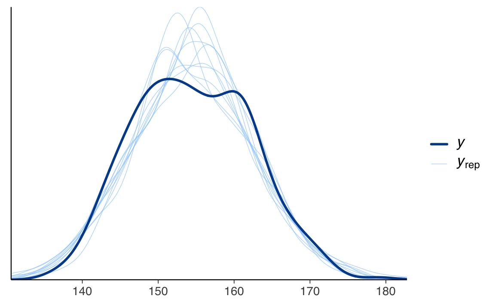

here::here("code", "_common.R") |>
source()
# Load packages
if (!requireNamespace("pacman")) install.packages("pacman")
pacman::p_load(brms, posterior, cmdstanr)59 Zucchero sintattico
In questo capitolo imparerai a
- utilizzare
brmper costruire e adattare modelli; - analizzare i risultati con
brm.
Prerequisiti
Preparazione del Notebook
59.1 Introduzione
I modelli lineari sono così ampiamente utilizzati che sono stati sviluppati appositamente una sintassi, dei metodi e delle librerie per la regressione. Una di queste librerie è {brms} (Bayesian Regression Models using Stan), già introdotta nel Capitolo 58. {brms} è un pacchetto R progettato per adattare modelli gerarchici generalizzati lineari (di cui il modello lineare bivariato è un caso particolare), utilizzando una sintassi simile a quella presente nei pacchetti R, come {lme4}, {nlme}, {rstanarm}. {brms} si basa su Stan, ma offre un’API di livello superiore.
In questo capitolo esploreremo in maniera dettagliata come condurre un’analisi di regressione utilizzando {brms} invece di Stan.
59.2 Interfaccia {brms}
Per fare un esempio, applicheremo il modello di regressione bivariato alla relazione tra altezza e peso. I dati contenuti nel file Howell_18.csv sono parte di un censimento parziale della popolazione !Kung San dell’area di Dobe, raccolti tramite interviste condotte da Nancy Howell alla fine degli anni ’60 (McElreath, 2020). I !Kung San sono una delle popolazioni di raccoglitori-cacciatori più conosciute del ventesimo secolo e sono stati oggetto di numerosi studi antropologici. In questa analisi, consideriamo un sottocampione di dati relativi alla popolazione adulta (di età superiore ai 18 anni).
Importiamo i dati contenuti nel file Howell_18.csv.
df <- rio::import(here::here("data", "Howell_18.csv"))df |>
head()
#> height weight age male
#> 1 152 47.8 63 1
#> 2 140 36.5 63 0
#> 3 137 31.9 65 0
#> 4 157 53.0 41 1
#> 5 145 41.3 51 0
#> 6 164 63.0 35 1Generiamo un diagramma a dispersione:
ggplot(df, aes(x = weight, y = height)) +
geom_point() +
labs(x = "Weight", y = "Height") 
{brms} si concentra sui modelli di regressione, e questa specializzazione permette di adottare una sintassi più semplice, conosciuta come sintassi di Wilkinson (Wilkinson & Rogers, 1973).
Ad esempio, il modello \(y = \alpha + \beta x + \varepsilon\) si implementa come segue:
a_model = brm(y ∼ 1 + x, data = df)Nella sintassi di Wilkinson, il simbolo tilde (∼) separa la variabile dipendente (a sinistra) dalle variabili indipendenti (a destra).
In questo caso, stiamo specificando solo la media (\(\mu\)). {brms} assume di default che la distribuzione di verosimiglianza sia gaussiana, ma è possibile modificarla tramite l’argomento family.
La notazione 1 si riferisce all’intercetta. L’intercetta viene inclusa di default. Per cui il modello precedente si può anche scrivere, in maniera equivalente, come
a_model = brm(y ∼ x, data = df)Se desideriaamo escludere l’intercetta dal modello, possiamo farlo in questo modo
no_intercept_model = brm(y ∼ 0 + x, data = df)oppure in questo modo
no_intercept_model = brm(y ∼ -1 + x, data = df)Per includere ulteriori variabili nel modello, possiamo procedere così:
model_2 = brm("y ∼ x + z", data){brms} consente anche di includere effetti a livello di gruppo (gerarchici). Ad esempio, se desideriamo un modello ad effetti misti nel quale abbiamo un effetto diverso di \(x\) in ciascun gruppo g, possiamo usare la seguente sintassi:
model_h = brm(y ∼ x + z + (x | g), data = df)La sintassi delle formule non specifica le distribuzioni a priori, ma solo come le variabili dipendenti e indipendenti sono collegate. {brms} definirà automaticamente delle distribuzioni a priori debolmente informative per noi, rendendo superflua la loro definizione esplicita. Tuttavia, se preferiamo avere un maggiore controllo, possiamo specificarle manualmente, come vedremo in seguito.
59.2.1 Centrare le Variabili
Per interpretare più facilmente l’intercetta, centriamo il peso rispetto alla media del campione:
df$weight_c = df$weight - mean(df$weight)Ora, l’intercetta (\(\alpha\)) rappresenterà l’altezza media quando il peso corrisponde alla media del campione.
59.2.2 Adattamento del modello e sintesi dei risultati
Adattiamo un modello lineare con peso centrato e esaminiamo i risultati:
fit_1 = brm(
bf(height ~ 1 + weight_c, center = FALSE),
data = df,
backend = "cmdstanr",
silent = 0
)L’output fornisce informazioni sui parametri del modello:
- la relazione lineare tra peso e altezza (β),
- l’intercetta (α),
- la deviazione standard residua (σ).
summary(fit_1)
#> Family: gaussian
#> Links: mu = identity; sigma = identity
#> Formula: height ~ 1 + weight_c
#> Data: df (Number of observations: 352)
#> Draws: 4 chains, each with iter = 2000; warmup = 1000; thin = 1;
#> total post-warmup draws = 4000
#>
#> Regression Coefficients:
#> Estimate Est.Error l-95% CI u-95% CI Rhat Bulk_ESS Tail_ESS
#> Intercept 154.59 0.27 154.06 155.11 1.00 4188 2889
#> weight_c 0.90 0.04 0.82 0.99 1.00 4573 3299
#>
#> Further Distributional Parameters:
#> Estimate Est.Error l-95% CI u-95% CI Rhat Bulk_ESS Tail_ESS
#> sigma 5.10 0.19 4.74 5.49 1.00 4380 2878
#>
#> Draws were sampled using sample(hmc). For each parameter, Bulk_ESS
#> and Tail_ESS are effective sample size measures, and Rhat is the potential
#> scale reduction factor on split chains (at convergence, Rhat = 1).59.2.3 Visualizzazione dei Risultati
Per comprendere la relazione stimata, utilizziamo la funzione conditional_effects:
conditional_effects(fit_1, effects = "weight_c")
Il grafico generato mostra:
- Media posteriore: La linea rappresenta la stima centrale dell’altezza per un dato peso.
- Intervallo di densità più alta (HDI): L’area evidenziata intorno alla linea mostra l’incertezza delle stime con un intervallo di probabilità del 94%.
59.3 Distribuzione a Posteriori dei Parametri
Per esaminare la distribuzione a posteriori:
mcmc_plot(fit_1, type = "dens")
mcmc_trace(fit_1)
Possiamo anche ottenere un sommario numerico dei parametri stimati:
draws <- posterior::as_draws(fit_1, variable = "^b_", regex = TRUE)
posterior::summarise_draws(draws, "mean", "sd", "mcse_mean", "mcse_sd")
#> # A tibble: 2 × 5
#> variable mean sd mcse_mean mcse_sd
#> <chr> <dbl> <dbl> <dbl> <dbl>
#> 1 b_Intercept 155. 0.268 0.00415 0.00441
#> 2 b_weight_c 0.904 0.0421 0.000622 0.000643Utilizziamo la funzione as_draws() che trasforma un oggetto R in un formato compatibile con {posterior}. Gli argomenti variable = "^b_" e regex = TRUEconsentono di selezionare solo i parametri il cui nome inizia con b_: nel nostro caso saranno l’intercetta e la pendenza del modello di regressione lineare.
Successivamente usiamo la funzione summarise_draws() con gli argomenti specificati per un sommario della distribuzione a posteriori dei parametri prescelti.
59.4 Specificare i Priors
Se vogliamo personalizzare i priors, possiamo utilizzare la funzione get_prior per esplorare quelli predefiniti:
get_prior(height ~ 1 + weight_c, data = df)
#> prior class coef group resp dpar nlpar lb ub
#> student_t(3, 154.3, 8.5) Intercept
#> (flat) b
#> (flat) b weight_c
#> student_t(3, 0, 8.5) sigma 0
#> source
#> default
#> default
#> (vectorized)
#> defaultImpostiamo priors espliciti e adattiamo un nuovo modello:
prior_guassian <-
prior(normal(160, 10), class = "b", coef = "Intercept") +
prior(normal(0, 5), class = "b", coef = "weight_c") +
prior(cauchy(0, 5), class = "sigma")fit_2 = brm(
bf(height ~ 1 + weight_c, center = FALSE),
prior = prior_guassian,
data = df,
backend = "cmdstanr",
silent = 0
)Otteniamo un sommario numerico dei parametri stimati:
draws <- posterior::as_draws(fit_2, variable = "^b_", regex = TRUE)
posterior::summarise_draws(draws, "mean", "sd", "mcse_mean", "mcse_sd")
#> # A tibble: 2 × 5
#> variable mean sd mcse_mean mcse_sd
#> <chr> <dbl> <dbl> <dbl> <dbl>
#> 1 b_Intercept 155. 0.272 0.00449 0.00440
#> 2 b_weight_c 0.905 0.0413 0.000717 0.00065159.5 Predizioni Predittive a Posteriori
Verifichiamo le predizioni del modello confrontandole con i dati osservati:
pp_check(fit_2)
#> Using 10 posterior draws for ppc type 'dens_overlay' by default.
pp_check(fit_1, type = "error_scatter_avg")
#> Using all posterior draws for ppc type 'error_scatter_avg' by default.
Vediamo che i residui bayesiani sono distribuiti in maniera omogenea rispetto alla retta di regressione (non indicata).
59.6 Regressione Robusta
I modelli robusti sono utili in presenza di outlier. Ad esempio, introduciamo un outlier nei dati:
df_outlier <- df
df_outlier$height[1] <- 200
df_outlier$weight_c[1] <- -15df_outlier |>
ggplot(aes(x = weight_c, y = height)) +
geom_point() +
labs(x = "Weight", y = "Height") 
Notiamo come la presenza di un solo outlier introduce una distorsione nei risultati:
fit_3 = brm(
bf(height ~ 1 + weight_c, center = FALSE),
prior = prior_guassian,
data = df_outlier,
backend = "cmdstanr",
silent = 0
)draws <- posterior::as_draws(fit_3, variable = "^b_", regex = TRUE)
posterior::summarise_draws(draws, "mean", "sd", "mcse_mean", "mcse_sd")
#> # A tibble: 2 × 5
#> variable mean sd mcse_mean mcse_sd
#> <chr> <dbl> <dbl> <dbl> <dbl>
#> 1 b_Intercept 155. 0.315 0.00479 0.00457
#> 2 b_weight_c 0.846 0.0492 0.000773 0.000774Adattiamo ora un modello robusto utilizzando una distribuzione \(t\) di Student:
fit_4 = brm(
bf(height ~ 1 + weight_c, center = FALSE),
prior = prior_guassian,
family = student(),
data = df_outlier,
backend = "cmdstanr",
silent = 0
)I risultati mostrano che il modello \(t\) è meno influenzato dagli outlier rispetto al modello gaussiano.
draws <- posterior::as_draws(fit_4, variable = "^b_", regex = TRUE)
posterior::summarise_draws(draws, "mean", "sd", "mcse_mean", "mcse_sd")
#> # A tibble: 2 × 5
#> variable mean sd mcse_mean mcse_sd
#> <chr> <dbl> <dbl> <dbl> <dbl>
#> 1 b_Intercept 155. 0.268 0.00425 0.00441
#> 2 b_weight_c 0.922 0.0395 0.000650 0.000630Il parametro \(\nu\) della \(t\) di Student viene stimato dal modello. Nel caso presente
draws <- posterior::as_draws(fit_4, variable = "nu")
posterior::summarise_draws(draws, "mean", "sd", "mcse_mean", "mcse_sd")
#> # A tibble: 1 × 5
#> variable mean sd mcse_mean mcse_sd
#> <chr> <dbl> <dbl> <dbl> <dbl>
#> 1 nu 6.15 1.74 0.0307 0.0424Con un parametro \(\nu\) = 6, la \(t\) di Student ha delle “code” molto maggiori di una gaussiana, e questo le consene di “assorbire” gli outliers in maniera maggiore che la gaussiana.
59.7 Indice di Determinazione Bayesiano
Con {brms} è anche possibile ottenere l’equivalente bayesiano dell’indice di determinazione:
bayes_R2(fit_4)
#> Estimate Est.Error Q2.5 Q97.5
#> R2 0.501 0.0198 0.46 0.53759.8 Riflessioni conclusive
Questo capitolo ha mostrato come utilizzare {brms} per costruire e interpretare modelli lineari, evidenziando le sue capacità di gestione dei priors, diagnostica e modellizzazione robusta. Grazie alla sua semplicità e flessibilità, {brms} rappresenta un potente strumento per l’inferenza bayesiana.
Informazioni sull’Ambiente di Sviluppo
sessionInfo()
#> R version 4.4.2 (2024-10-31)
#> Platform: aarch64-apple-darwin20
#> Running under: macOS Sequoia 15.1.1
#>
#> Matrix products: default
#> BLAS: /Library/Frameworks/R.framework/Versions/4.4-arm64/Resources/lib/libRblas.0.dylib
#> LAPACK: /Library/Frameworks/R.framework/Versions/4.4-arm64/Resources/lib/libRlapack.dylib; LAPACK version 3.12.0
#>
#> locale:
#> [1] C/UTF-8/C/C/C/C
#>
#> time zone: Europe/Rome
#> tzcode source: internal
#>
#> attached base packages:
#> [1] stats graphics grDevices utils datasets methods base
#>
#> other attached packages:
#> [1] rstan_2.32.6 StanHeaders_2.32.10 cmdstanr_0.8.1.9000
#> [4] posterior_1.6.0 brms_2.22.8 Rcpp_1.0.13-1
#> [7] MASS_7.3-61 viridis_0.6.5 viridisLite_0.4.2
#> [10] ggpubr_0.6.0 ggExtra_0.10.1 gridExtra_2.3
#> [13] patchwork_1.3.0 bayesplot_1.11.1 psych_2.4.6.26
#> [16] scales_1.3.0 markdown_1.13 knitr_1.49
#> [19] lubridate_1.9.3 forcats_1.0.0 stringr_1.5.1
#> [22] dplyr_1.1.4 purrr_1.0.2 readr_2.1.5
#> [25] tidyr_1.3.1 tibble_3.2.1 ggplot2_3.5.1
#> [28] tidyverse_2.0.0 rio_1.2.3 here_1.0.1
#>
#> loaded via a namespace (and not attached):
#> [1] mnormt_2.1.1 inline_0.3.20 sandwich_3.1-1
#> [4] rlang_1.1.4 magrittr_2.0.3 multcomp_1.4-26
#> [7] matrixStats_1.4.1 compiler_4.4.2 loo_2.8.0
#> [10] reshape2_1.4.4 vctrs_0.6.5 pkgconfig_2.0.3
#> [13] fastmap_1.2.0 backports_1.5.0 labeling_0.4.3
#> [16] utf8_1.2.4 promises_1.3.2 rmarkdown_2.29
#> [19] tzdb_0.4.0 ps_1.8.1 xfun_0.49
#> [22] jsonlite_1.8.9 later_1.4.1 broom_1.0.7
#> [25] parallel_4.4.2 R6_2.5.1 stringi_1.8.4
#> [28] car_3.1-3 estimability_1.5.1 zoo_1.8-12
#> [31] R.utils_2.12.3 pacman_0.5.1 httpuv_1.6.15
#> [34] Matrix_1.7-1 splines_4.4.2 timechange_0.3.0
#> [37] tidyselect_1.2.1 abind_1.4-8 yaml_2.3.10
#> [40] codetools_0.2-20 miniUI_0.1.1.1 curl_6.0.1
#> [43] processx_3.8.4 pkgbuild_1.4.5 plyr_1.8.9
#> [46] lattice_0.22-6 shiny_1.9.1 withr_3.0.2
#> [49] bridgesampling_1.1-2 coda_0.19-4.1 evaluate_1.0.1
#> [52] survival_3.7-0 RcppParallel_5.1.9 pillar_1.9.0
#> [55] carData_3.0-5 tensorA_0.36.2.1 stats4_4.4.2
#> [58] checkmate_2.3.2 distributional_0.5.0 generics_0.1.3
#> [61] rprojroot_2.0.4 hms_1.1.3 rstantools_2.4.0
#> [64] munsell_0.5.1 xtable_1.8-4 glue_1.8.0
#> [67] emmeans_1.10.5 tools_4.4.2 data.table_1.16.2
#> [70] ggsignif_0.6.4 mvtnorm_1.3-2 grid_4.4.2
#> [73] QuickJSR_1.4.0 colorspace_2.1-1 nlme_3.1-166
#> [76] Formula_1.2-5 cli_3.6.3 fansi_1.0.6
#> [79] Brobdingnag_1.2-9 V8_6.0.0 gtable_0.3.6
#> [82] R.methodsS3_1.8.2 rstatix_0.7.2 digest_0.6.37
#> [85] TH.data_1.1-2 htmlwidgets_1.6.4 farver_2.1.2
#> [88] R.oo_1.27.0 htmltools_0.5.8.1 lifecycle_1.0.4
#> [91] mime_0.12Bibliografia
McElreath, R. (2020). Statistical rethinking: A Bayesian course with examples in R and Stan (2nd Edition). CRC Press.
Wilkinson, G., & Rogers, C. (1973). Symbolic description of factorial models for analysis of variance. Journal of the Royal Statistical Society Series C: Applied Statistics, 22(3), 392–399.